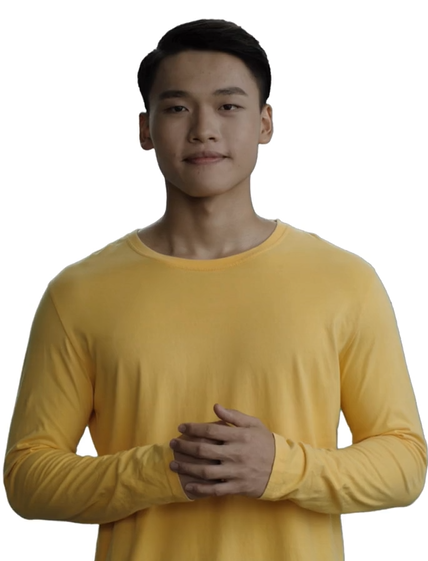

Alexandre Yun
Développeur web junior en alternance

Expérience Professionnelle
- Développeur web junior en alternance - TechStart Solutions, Lille (Septembre 2023 - Présent).
- Participation au développement de sites web et applications web pour divers clients.
- Apprentissage et application des pratiques de développement Agile et Scrum.
- Collaboration avec l'équipe de design pour l'intégration des maquettes UI/UX.
- Stagiaire développeur web - InnoWeb, Lyon (Juin 2023 - Août 2023).
- Aide à la création de sites web statiques pour petites entreprises.
- Introduction à JavaScript et PHP pour ajouter de l'interactivité et des fonctionnalités backend simples.
Formation
- Bachelor Développeur Informatique en alternance - Junia XP (en cours).
Compétences
- Langages de programmation : HTML, CSS, JavaScript (novice).
- Outils et technologies : Git, GitHub, Visual Studio Code.
- Méthodes de travail : Agile, Scrum.
Centres d'intérêts
- Technologie et innovation : passion pour suivre les dernières tendances technologiques et participer à des hackathons.
- Musique : Pratique de la guitare et composition musicale sur ordinateur (DAW, Pure Data).
- Sports : Pratique régulière du VTT et participation à des courses locales.